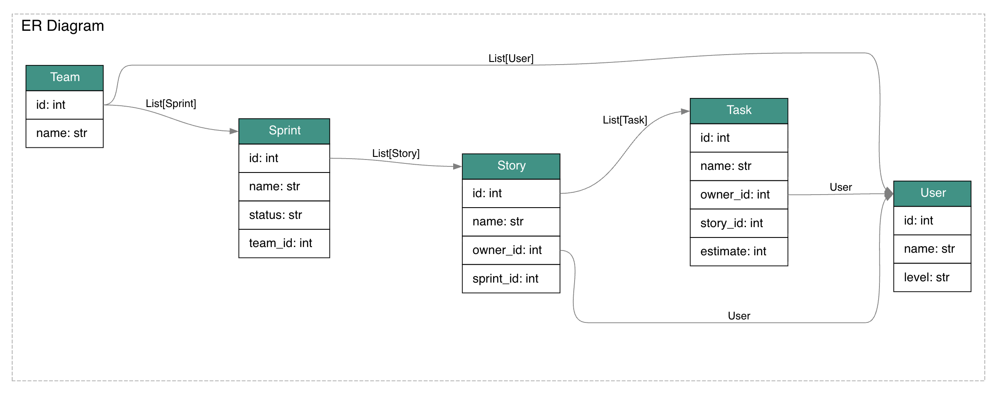
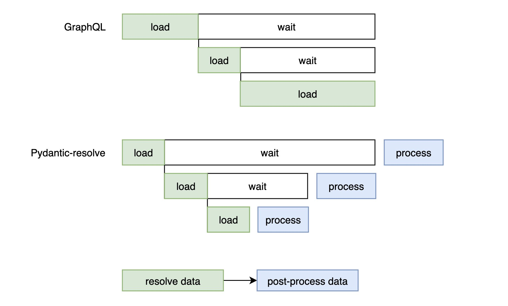
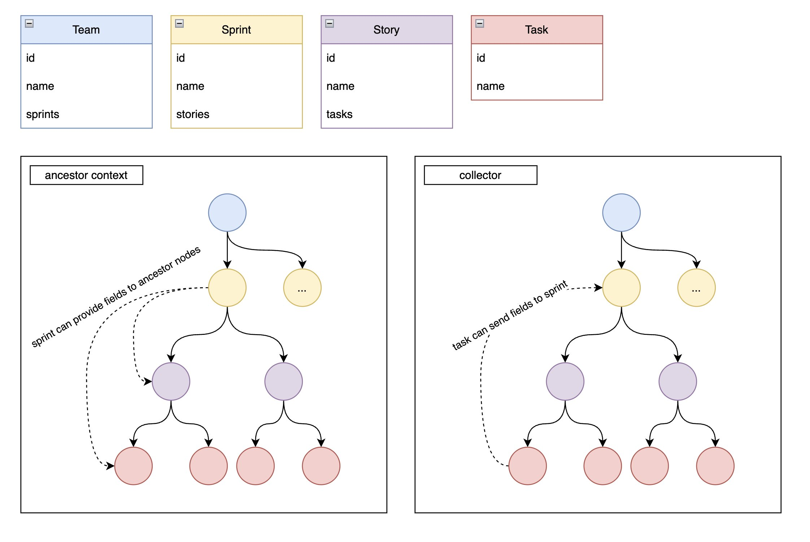

简介
Pydantic resolve 是一个基于 Pydantic 的数据组装工具， 它无需额外的胶水代码就可以用最小的成本构建复杂的数据。
它的最佳使用场景是构建 UI 所需的视图数据，可以在复用大部分的代码（比如 dataloader）的情况下，平替 GraphQL， 并提供更好的性能， 更好的维护性。
它在 Pydantic 类的基础上， 添加了 resolve 方法， 用于按需获取数据。 添加了 post 方法， 用来对获取到的数据做各种处理， 进而满足各种不同的业务需求。
从 Pydantic resolve v2 版本开始， 新增了 ErDiagram 功能， 用来定义应用层的 ER 图， 其中 Relationship 中可以定义默认使用的 dataloader， 来大幅简化关联数据的获取代码。
它可以和许多现代 Python web 框架集成， 比如 FastAPI, Litestar 和 Diango-ninja
FastAPI 的用户可以使用 FastAPI Voyager 来获取更好的开发体验, 它可以将复杂的 schema 关系用图的方式可视化出来， 并且能够点击交互。 可以查看 Demo 来快速体验。
安装
v1 版本从 v1.11.0 开始， 同时支持 Pydantic v1 和 v2
v2 版本开始， 只支持 v2, 并且移除了对 dataclass 的支持， 其他特性都向前兼容。
简单样例
这里演示一个代码片段。
在提供了 tms.Team 数据的情况下， 通过继承复用 Team 的字段， 添加 sprints, member 的方式来申明数据结构， 并使用 resolve_sprints 搭配 dataloader 来提供具体获取数据的方式。
最后使用 Resolver 来遍历和执行相关设置。
其中的两个 dataloader 内部只是简单的 batch 查询。
from pydantic_resolve import Loader, Resolver
class Sample1TeamDetail(tms.Team):
sprints: list[Sample1SprintDetail] = []
def resolve_sprints(self, loader=Loader(spl.team_to_sprint_loader)):
return loader.load(self.id)
members: list[us.User] = []
def resolve_members(self, loader=Loader(ul.team_to_user_loader)):
return loader.load(self.id)
@route.get('/teams-with-detail', response_model=List[Sample1TeamDetail])
async def get_teams_with_detail(session: AsyncSession = Depends(db.get_session)):
teams = await tmq.get_teams(session)
teams = [Sample1TeamDetail.model_validate(t) for t in teams]
teams = await Resolver().resolve(teams)
return teams
实体关系图
v2 版本提供的 ErDiagram 是个非常强力的工具， 它提供了应用层定义 Entity Relationship Diagram 的能力， 在 Relationship 中， 可以提供默认使用的 dataloader 来简化构建数据的代码量。
应用层的 ERD 描述和 DB 层相比， 可以更贴近实际的业务模型， 不用关心太多 DB 层的细节。
它提供了两种定义方式， 第一种是单独定义：source code:
diagram = ErDiagram(
configs=[
Entity(
kls=Team,
relationships=[
Relationship( field='id', target_kls=list[Sprint], loader=sprint_loader.team_to_sprint_loader),
Relationship( field='id', target_kls=list[User], loader=user_loader.team_to_user_loader)
]
),
Entity(
kls=Sprint,
relationships=[
Relationship( field='id', target_kls=list[Story], loader=story_loader.sprint_to_story_loader)
]
),
Entity(
kls=Story,
relationships=[
Relationship( field='id', target_kls=list[Task], loader=task_loader.story_to_task_loader),
Relationship( field='owner_id', target_kls=User, loader=user_loader.user_batch_loader)
]
),
Entity(
kls=Task,
relationships=[
Relationship( field='owner_id', target_kls=User, loader=user_loader.user_batch_loader)
]
)
]
)
另一种是类内部定义， 用法类似 Sqlalchemy 的 declaretive_base:
from pydantic_resolve import base_entity, Relationship
from task.schema import Task
BaseEntity = base_entity()
class Story(BaseModel, BaseEntity):
__pydantic_resolve_relationships__ = [
Relationship(field='id', target_kls=list[Task], loader=task_loader.story_to_task_loader)
]
id: int
name: str
diagram = BaseEntity.get_diagram()
在 FastAPI Voyager 中， ErDiagram 可以被绘制出来：

在定义完 ErDiagram 之后， 相关的数据加载代码就不用再书写 resolve 和 dataloader 的代码了， 只需要申明加载哪个 Relationship， 内部会自动生成 resolve 方法， 并且自动调用 dataloader。
# old
class Sample1TeamDetail(tms.Team):
sprints: list[Sample1SprintDetail] = []
def resolve_sprints(self, loader=Loader(spl.team_to_sprint_loader)):
return loader.load(self.id)
members: list[us.User] = []
def resolve_members(self, loader=Loader(ul.team_to_user_loader)):
return loader.load(self.id)
# new
from pydantic_resolve import LoadBy
class Sample1TeamDetail(tms.Team):
sprints: Annotated[list[Sample1SprintDetail], LoadBy('id')] = []
members: Annotated[list[us.User], LoadBy('id')] = []
它会根据继承源头， loadby 参数， 以及返回值类型， 来确定唯一的 Relationship 以及其 loder 定义。
定义子集和继承
Pydantic Resolve 另一个重要的能力是定义数据子集 DefineSubset， 类似于 SQL select 或者 GraphQL 选择字段。
from pydantic_resolve import DefineSubset
class MyStory(DefineSubset):
__subset__ = (Story, ('id'))
tasks: Annotated[list[Task], LoadBy('id')] = []
通过这样的方式， MyStory 是一个只挑选了 Story id 字段的类。 在类的内部， 会有私有属性追踪 MyStory 的源头类型。
因此 MyStory 中申明的 LoadBy， 也会向上最终追溯到 Story， 然后找到 Story 下相关的 Relationship。
而使用全集则只需要简单继承即可
三步构建复杂数据
我们基于敏捷开发的模型中， Story, Task 和 User 来举例子，来演示 Pydantic resolve 如何用最简洁的方式来构建各种业务所需的数据组合。
1. 定义实体和关系
根据业务模型创建基础的实体和之间的关系。
在 Pydantic resolve 中， 使用 dataloader 作为默认的 Relationship 实现。
from pydantic import BaseModel
class Story(BaseModel):
id: int
name: str
owner_id: int
sprint_id: int
model_config = ConfigDict(from_attributes=True)
class Task(BaseModel):
id: int
name: str
owner_id: int
story_id: int
estimate: int
model_config = ConfigDict(from_attributes=True)
class User(BaseModel):
id: int
name: str
level: str
model_config = ConfigDict(from_attributes=True)
定义 dataloder 的实现。 函数只需要满足异步和接受数组参数这两个条件。 代码中分离 util 函数是为了方便注入 session 进行单元测试。
from .model import Task
from sqlalchemy.ext.asyncio import AsyncSession
from sqlalchemy import select
import src.db as db
from pydantic_resolve import build_list
# --------- user_id -> user ----------
async def batch_get_users_by_ids(session: AsyncSession, user_ids: list[int]):
users = (await session.execute(select(User).where(User.id.in_(user_ids)))).scalars().all()
return users
async def user_batch_loader(user_ids: list[int]):
async with db.async_session() as session:
users = await batch_get_users_by_ids(session, user_ids)
return build_object(users, user_ids, lambda u: u.id)
# ---------- task id -> task ------------
async def batch_get_tasks_by_ids(session: AsyncSession, story_ids: list[int]):
users = (await session.execute(select(Task).where(Task.story_id.in_(story_ids)))).scalars().all()
return users
async def story_to_task_loader(story_ids: list[int]):
async with db.async_session() as session:
tasks = await batch_get_tasks_by_ids(session, story_ids)
return build_list(tasks, story_ids, lambda u: u.story_id)
然后使用单独申明的方式定义 ER 图。
diagram = ErDiagram(
configs=[
ErConfig(
kls=Story,
relationships=[
Relationship( field='id', target_kls=list[Task], loader=task_loader.story_to_task_loader),
Relationship( field='owner_id', target_kls=User, loader=user_loader.user_batch_loader)
]
),
ErConfig(
kls=Task,
relationships=[
Relationship(field='owner_id', target_kls=User, loader=user_loader.user_batch_loader)
]
)
]
)
config_global_resolver(diagram) # 重要： 将 ER diagram 信息注入到 Resolver 中
这样所有的准备工作就都完毕了。
顺带一提 dataloader 是默认的一种实现方式， 内部的实现可以是 RPC 调用， 本地文件查询， 抑或 DB 查询， 对调用者都是无需感知的。
另外如果使用 ORM relationship 的话， 可以将 Relationship 中的 loader 配置移除， 并且删除 LoadBy （或者 resolve 方法）， 使用 ORM 获取到的组合数据来替换。
2. 根据业务需求构建数据
通过简单的继承， 扩展字段来描述所需的业务数据结构。
在这个阶段我们将把所需的源数据先获取到， 在第三阶段会在这个基础上对数据进行各种转换调整。
class Task(BaseTask):
user: Optional[BaseUser] = None
def resolve_user(self, loader=Loader(user_batch_loader)):
return loader.load(self.owner_id) if self.owner_id else None
class Story(BaseStory):
tasks: list[Task] = []
def resolve_tasks(self, loader=Loader(story_to_task_loader)):
return loader.load(self.id)
assignee: Optional[BaseUser] = None
def resolve_assignee(self, loader=Loader(user_batch_loader)):
return loader.load(self.owner_id) if self.owner_id else None
如果 ErDiagram 提供了的话， 我们的代码可以被进一步精简。
class Task(BaseTask):
user: Annotated[Optional[BaseUser], LoadBy('owner_id')] = None
class Story(BaseStory):
tasks: Annotated[list[Task], LoadBy('id')] = []
assignee: Annotated[Optional[BaseUser], LoadBy('owner_id')] = None
元类 DefineSubset 可以用来快速创建子集类型， 仅需提供需要的字段列表。
class Story1(DefineSubset):
# define the base class and fields wanted
__subset__ = (BaseStory, ('id', 'name', 'owner_id'))
tasks: Annotated[list[Task1], LoadBy('id')] = []
assignee: Annotated[Optional[BaseUser], LoadBy('owner_id')] = None
3. 根据业务的细节对数据进行调整
第二阶段构建的数据， 通常是不能直接满足 UI 层展示的需要的， 许多细节上的需求会要求开发重新对构造完的数据进行遍历， 比如：
- task 的 name 要改成 前缀是所属的 story 的 name
- story 需要提供 task 总共的估算时间
- story 需要统计所有 task 涉及到的开发人员有哪些
在 Pydantic resolve 中， 这些需求可以使用 post 方法立即完成， 不需要任何的重新遍历过程。
从生命周期的角度， 一个 Pydantic class 中的 post 方法， 会在所有的 resolve 方法执行结束之后才开始， 所以从 post 方法的视角来看， 所有 resolve 方法相关的数据， 都是已经获取完毕了的。
换个说法， post 方法本身就是遍历过程中提供的一个 hook， 利用它可以在数据获取之后进行各种各样的操作。
让我们结合列出的三个案例来进行说明。
#1: 一个节点把自己的字段提供给它的所有子孙节点
task 的 name 要改成 前缀是所属的 story 的 name
view in voyager, 双击 Story3
通过定义 __pydantic_resolve_expose__ 可以将当前类中描述的字段数据， 提供给子孙节点。
__pydantic_resolve_expose__ = { 'name': 'story_name' }
注意这里的 key (name) 是字段的名字， value (story_name) 是一个别名， 用来给子孙节点寻找， 这个别名需要是 “全局” 唯一的， 这个全局是指整个 Story 为根节点的所有类。
子孙节点可以通过 ancestor_context['story_name'] 来读取到数据。
# post case 1
class Task3(BaseTask):
user: Annotated[Optional[BaseUser], LoadBy('owner_id')] = None
fullname: str = ''
def post_fullname(self, ancestor_context): # Access story.name from parent context
return f'{ancestor_context["story_name"]} - {self.name}'
class Story3(DefineSubset):
__subset__ = (BaseStory, ('id', 'name', 'owner_id'))
__pydantic_resolve_expose__ = {'name': 'story_name'}
tasks: Annotated[list[Task3], LoadBy('id')] = []
assignee: Annotated[Optional[BaseUser], LoadBy('owner_id')] = None
#2: 根据获取到的数据， 计算额外的数据。
如何计算每个 story task 总共的估算时间？
view in voyager, 双击 Story2
借助 post 的生命周期中执行晚于 resolve 的特性，这个需求非常简单，直接 sum 就完了。
class Task2(BaseTask):
user: Annotated[Optional[BaseUser], LoadBy('owner_id')] = None
class Story2(DefineSubset):
__subset__ = (BaseStory, ('id', 'name', 'owner_id'))
tasks: Annotated[list[Task2], LoadBy('id')] = []
assignee: Annotated[Optional[BaseUser], LoadBy('owner_id')] = None
total_estimate: int = 0
def post_total_estimate(self):
return sum(task.estimate for task in self.tasks)
#3: 祖先节点从子孙节点中收集数据。
story 需要统计所有 task 涉及到的开发人员有哪些
view in voyager, 双击 Task1, 查看 source code
要实现收集功能， 需要在祖先节点中定义好一个 Collector， 和 expose 类似， 所有子孙节点可以往定义好的 Collector 发送数据。
然后通过 collector.values() 来读取数据。
只是这个 Collector 中的别名并不需要“全局” 唯一， 所有同名的 Collector 会根据祖孙关系收集到范围内的数据。
在子孙节点中， 使用 __pydantic_resolve_collect__ = {'user': 'related_users'} 申明了， 它将会把 user 数据， 发送给祖先节点中名字为 related_users 的收集器。
__pydantic_resolve_collect__ 的定义方式非常多：
__pydantic_resolve_collect__ = {'user': 'related_users'}: 将 user 发送给 related_users
__pydantic_resolve_collect__ = {('id', 'user'): 'related_users'}: 将 user, id 打包发送给 related_users
__pydantic_resolve_collect__ = {('id', 'user'): ('related_users', 'all_users')}: 将 user, id 打包发送给 related_users 和 all_users
Pydantic resolve 提供的默认 Collector 会把数据收集到列表中， 你也可以通过实现 ICollector 来创建子集所需的 Collector
更多收集器相关的可以阅读这里
来看一下完整代码, related_users 就能收集到所有的 user 数据了。（注意， 这个例子里面并未处理重复数据的问题）
class Task1(BaseTask):
__pydantic_resolve_collect__ = {'user': 'related_users'} # Propagate user to collector: 'related_users'
user: Annotated[Optional[BaseUser], LoadBy('owner_id')] = None
class Story1(DefineSubset):
__subset__ = (BaseStory, ('id', 'name', 'owner_id'))
tasks: Annotated[list[Task1], LoadBy('id')] = []
assignee: Annotated[Optional[BaseUser], LoadBy('owner_id')] = None
related_users: list[BaseUser] = []
def post_related_users(self, collector=Collector(alias='related_users')):
return collector.values()
4. 执行
Pydantic resolve 中提供了 Resolver().resolve(data) 的方式来启动对数据的处理。
我们首先需要提供 Story 类型的数据， 然后 Resolver 内部就会执行我们的配置来做数据获取和转换。
from pydantic_resolve import Resolver
stories = [Story(**s) for s in await query_stories()]
data = await Resolver().resolve(stories)
工作原理
在 Resolver().resolve(data) 内部， 它会先从 data 中提取出类型信息， 然后递归分析获取所有需要遍历的路径， 和需要执行的方法。
在收集完毕 meta 信息之后， 整个执行过程是一个类似广度优先的遍历过程， 只是在每个节点中会区分 resolve 和 post 的先后执行顺序。
如果我们和 GraphQL 做对比， 会发现两者非常的相似： 都是用 resolve 的方式来获取数据， 都使用了 dataloader 来解决 N+1 查询。
他们的最大差别是 post 方法， 以及 post 方法相关的一系列数据后处理的能力。
另外因为从 post 的视角， resolve 获取到的数据一直都是准备就绪的， 因此所有对 resolve 阶段的优化， 都不会影响到 post 相关的操作。
比如我们使用 ORM relationship selectinload 方法提前获取 tasks 信息， 此时只需要移除 tasks 相关的 resolve 方法， 不会影响 post 的所有逻辑。
我们对比一下 Pydantic resolve 和 GraphQL 的执行流程

因为 Pydantic 可以直接初始化一个嵌套结构的数据 (ORM 直接提供完整数据) ， 所以可以单纯只执行 post 方法。

Expose 和 Collector 方法在内部都是借助 contextvars 来实现 scope 级别的数据隔离的。
